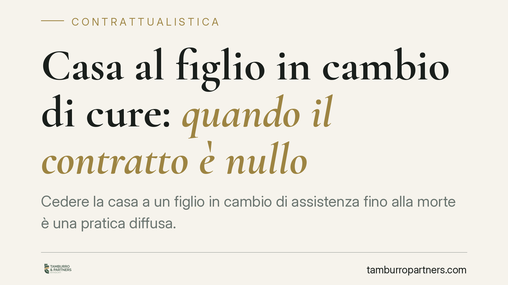

Casa al figlio in cambio di cure: quando il contratto è nullo
Cedere la casa a un figlio in cambio di assistenza fino alla morte è una pratica diffusa. Ma se, al momento dell'atto, l'anziano è già gravemente malato e le cure valgono molto meno dei beni ceduti, il contratto può essere dichiarato nullo. Una recente pronuncia della Cassazione impone ai giudici di merito di verificare i numeri, con conseguenze rilevanti anche per gli altri eredi.

Il caso
Un genitore anziano trasferisce al figlio la nuda proprietà (o la piena proprietà) dell'abitazione. In cambio, il figlio si impegna ad assisterlo vita natural durante: vitto, cura, convivenza, prestazioni personali. È il cosiddetto contratto di mantenimento.
Il problema nasce quando l'anziano, al momento del rogito, versa già in condizioni critiche. In questi casi le prestazioni di assistenza possono risultare sproporzionatamente inferiori al valore dei beni ceduti. Un recente orientamento della Corte di Cassazione, Sez. II, è intervenuto sul punto imponendo ai giudici di merito un raffronto economico concreto tra ciò che il figlio dà e ciò che riceve.
> Nota di verifica. Gli estremi esatti della pronuncia (numero e anno) devono essere confermati con la fonte ufficiale prima di qualsiasi uso processuale o pubblicazione definitiva.
Inquadramento normativo
Il contratto di mantenimento è una figura atipica: non è disciplinato direttamente dal codice civile, ma è ammesso in quanto diretto a realizzare interessi meritevoli di tutela (art. 1322 c.c.). Va tenuto distinto dalla rendita vitalizia dell'art. 1872 c.c., che costituisce il modello normativo di riferimento ma non si confonde con esso: nel mantenimento la prestazione è personale, infungibile e variabile (assistenza, cura, convivenza), non una somma periodica predeterminata.
Elemento comune ai due schemi è l'alea: l'incertezza sulla durata della vita del beneficiario e, quindi, sull'ammontare complessivo delle prestazioni che il vitaliziante dovrà rendere. L'alea non è un accessorio: è la ragione economica stessa del contratto, la sua causa. Se manca, il contratto perde la propria giustificazione.
Quando l'anziano è già gravemente malato e la morte è prevedibilmente prossima, l'incertezza viene meno: si sa, in sostanza, che le cure saranno brevi e di valore contenuto rispetto all'immobile. Da qui la nullità.
Sul fondamento tecnico della nullità esistono due letture. La prima, prevalente, la ricollega al difetto di alea. La seconda la qualifica come nullità per difetto di causa o per mancanza originaria dell'oggetto, poiché il programma contrattuale è privo, fin dall'inizio, di reale contenuto aleatorio. In entrambi i casi l'esito è la nullità dell'atto.
Il peso dell'usufrutto trattenuto
Un fattore spesso sottovalutato è l'usufrutto che il disponente trattiene per sé. Se l'anziano cede solo la nuda proprietà, il figlio riceve un bene gravato: non può disporne pienamente finché il genitore è in vita. Il raffronto economico va quindi condotto sul valore reale di ciò che il figlio acquista, non sul valore di mercato dell'immobile libero.
Diverso è il caso in cui venga ceduta la piena proprietà: qui la sproporzione tra prestazioni e beni emerge in modo più netto e la valutazione di nullità diventa più agevole.
Implicazioni pratiche
Per il figlio assistente, il rischio è vedersi caducare l'acquisto a distanza di anni, con restituzione del bene e delle utilità goduto.
Per gli altri eredi — tipicamente i fratelli esclusi — la pronuncia apre spazi concreti. Se il contratto maschera in realtà una donazione (prestazioni simboliche a fronte di un bene di valore), il legittimario leso può agire. Rilevano l'azione di riduzione (artt. 553 ss. c.c.) per reintegrare la quota riservata e la collazione (art. 737 c.c.) per riportare in massa quanto ricevuto dal coerede.
Cosa fare in concreto
- Se sei il figlio assistente: documenta tutte le prestazioni (spese mediche, pagamenti, convivenza, assistenza quotidiana) con riscontri datati e verificabili. In giudizio sarà determinante provare l'effettività e il valore delle cure.
- Prima di stipulare: fai valutare le condizioni di salute del disponente e il valore dei beni ceduti. Un contratto sottoscritto quando la malattia è già conclamata è esposto a nullità.
- Valuta la figura giuridica: se l'intento è gratificare un figlio, considera una donazione esplicita, con le relative tutele e i relativi limiti, invece di un vitalizio dall'alea debole.
- Se sei un erede escluso: raccogli la documentazione sanitaria del defunto all'epoca dell'atto e verifica la proporzione tra prestazioni rese e valore ceduto, in vista di un'eventuale azione.
- In ogni caso: fai analizzare l'atto da un professionista prima di agire o resistere in giudizio, perché la valutazione è economica oltre che giuridica.
Conclusione
Il contratto di mantenimento resta uno strumento legittimo e utile per tutelare chi invecchia. La pronuncia non lo demonizza: ne pretende il rigore. L'alea deve essere reale, le prestazioni effettive, l'equilibrio economico verificabile. Quando questi elementi mancano, l'atto rischia di non reggere.
---
*Contributo informativo a cura di Tamburro & Partners Avvocati - Avv. Giuseppe Tamburro. Non costituisce parere legale.*
Ogni contratto ha il suo equilibrio.
Se vuoi una revisione delle clausole o una redazione su misura, scrivi allo studio. Ti rispondiamo entro un giorno lavorativo.